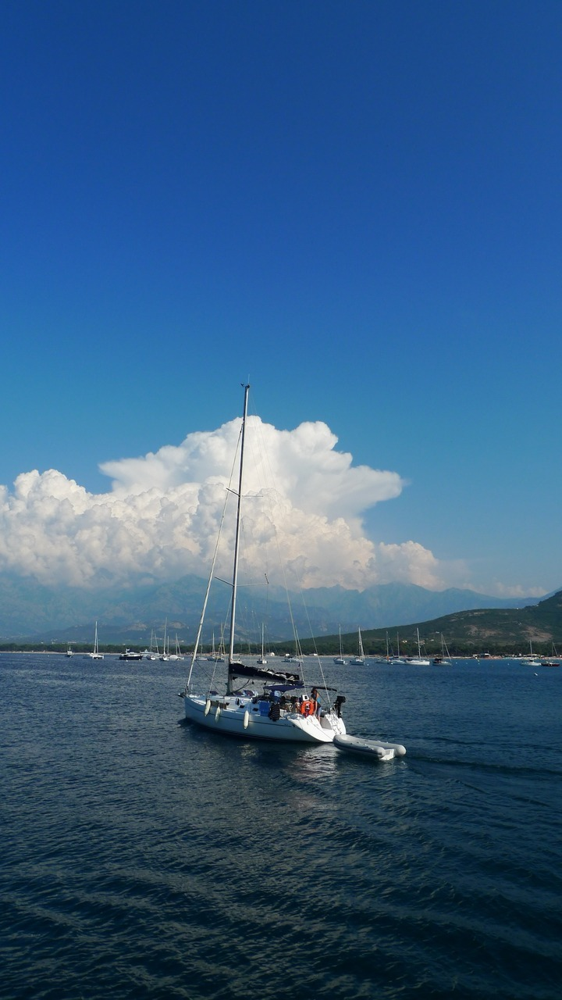
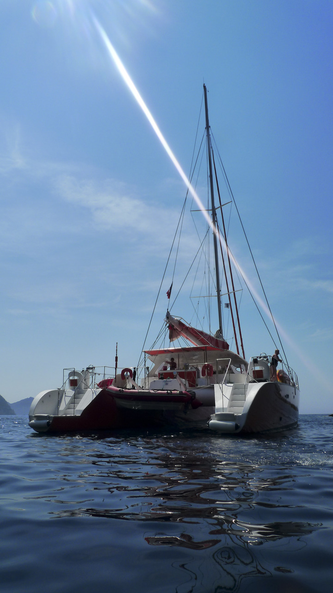

Wed, 18 Aug 2010 11:52:00 · ocean · catamaran · sea · corsica · france
sailing in corsica france clear bluegreen


Sailing in Corsica - France
Clear blue/green water, gorgeous weather, and awesome Catamaran boat… perfect combo for diving, snorkeling and kayaking. #win!